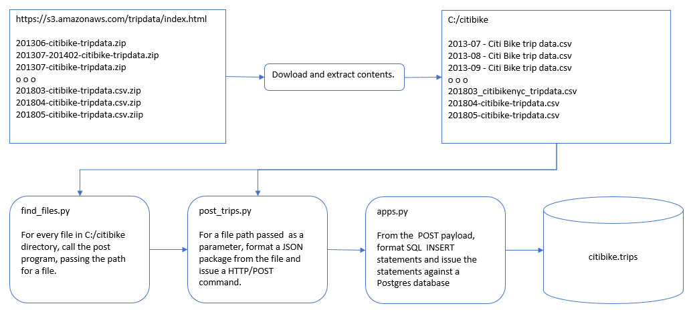
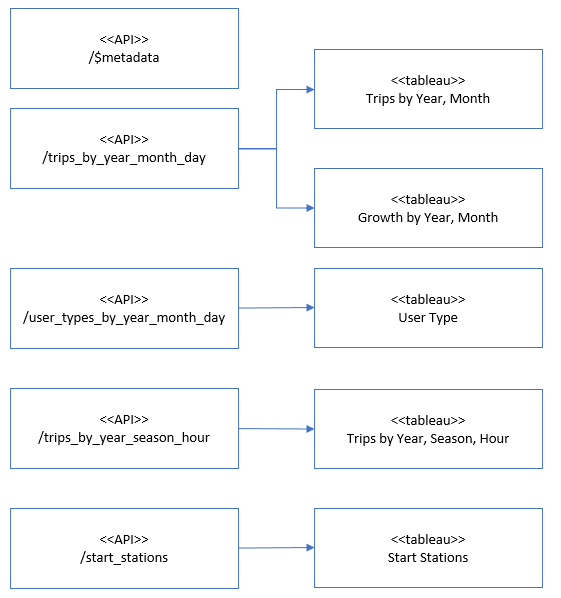

Summary

Based on bike trip data provided by
citibike the data was analyzed, searching for answers for the following questions.
- How many trips have been recorded total during the chosen period?
- By what percentage has total ridership grown?
- How has the proportion of short-term customers and annual subscribers changed?
- What are the peak hours in which bikes are used during summer months?
- What are the peak hours in which bikes are used during winter months?
- Today, what are the top 10 stations in the city for starting a journey? (Based on data, why do you hypothesize
these are the top locations?)
The answers were derived in a a four-step process.
- Data Acquisition
- Data Modeling
- Data Access
- Data Visualization
Data Acquisition

There are 60 archive files that yielded 60 csv files.
The resulting citibike.trips table contains nearly 60 million rows.
All files were processed that were in C:/citibike directory.
Assumming all files were type csv, the ever evolving naming scheme for the files had no effect.
Some of the data cleansing done were:
- Data that would normally hold type integer data where converted to type integer. If the cast failed, the value
None was assigned.
- Data that would normally hold text that had the value "NULL" were assigned the value None.
- Key values for start_time and bike_id were required.
- Records with duplicate keys were ignored.
Data Modeling
Loading the 60 csv files into a database allows access to all data. However, the database has nearly 60 million rows.
Materialized views aggregate and store the data, thus greatly reducing the amount of data transmitted to a client
and avoiding processing time.
Not all aggregation is done with SQL. However, the "heavy lifting" is done in advance in the database to allow the
client to do further discovery.
The advantages of using materialized in Postgres:
- Fast perfomance, since the data is already aggregated.
- Reduce the number of records to be transmitted to a client.
- Use of the aggregation, windowing, and analytical functions in Postgres.
Data Access
An Application Programming Interface (API) was developed.
This API would read either a materialized view or a view and format a OData/JSON payload. The view objects applied
Postgres windowing to calculate percentages or eliminate duplicates.
A typical API would provision a JSON package with or without embedded metadata.
However, Tableau is different. It requires Open Data Protocol (OData). This a combination of a JSON payload and an
XML payload describing the JSON.
Data Visualization

All Tableau views were created using OData resources.
These OData resources were JSON payloads with the number of rows ranging from a low of 10 rows to as many as 3,814
rows. Since the data was already aggregated, response is immediate.
The Postgres database contained nearly 60 million rows.
The system would fail if that much data were to be pushed out to Tableau and having Tableau do the aggregation.